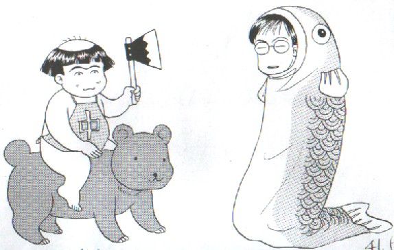

元来が文系の人間で、メカにはあまり強くない。そこでＰＣノウハウといっても、そのとき必要なことの最小限しか覚えないで来た。そのσ(-_-)が、いろいろ経緯があってＨＰを立ち上げることに。もちろん今まで必要としてなかったのだから、ＨＰの知識など皆無。
そんなある日、リンクの付け方について某Ｎさんのレクチャーを受けた。
「ああしてこうしてこうやって・・・・」
「ふみふみ、なるほろ」
何とか一通り終了し、メモもばっちり取って分かったつもり。Ｎさんが帰ってから、メモとにらめっこしながらやってみた。
いくつものリンクを張ってみて、「うん、これでいいだろう」
起動させてみたら、どれ一つ動かない(?。?)。しかし理由がさっぱり分からない。こっちはちゃんとメモ通りにやったんだ。どうしようもないから、ＮさんにＳＯＳコール。
「しょうがないなぁ〜」というので、また足を運んでくれた。
「どうしてこいつが張れてないのかな？」
「う〜ん」といいながらモニターをじっと見ていたＮさん。
「これじゃぁダメですよ」
「どして？」
「保存ファイルの拡張子はhtmなのに、リンク先はhtmlになってる」
「ふ〜ん、でもｈｔｍでもｈｔｍｌでも同じようなものって言ってたじゃん」
「いや、とにかくこれを一致させなきゃダメ」
そこですべてをhtmlに統一し、
「よし、これならいいだろう」
起ち上げてみたら、半分くらいしかうまく行ってない(T。T)。そこでもう一度、見てもらうと、まもなくミスが見つかった。
「ほら、よく見てください」
「？」
「ファイル名やリンク先の数字が全角だったり半角だったりしてます。これは半角で統一しなければ」
「 (?-?) 」
「人間にとっては同じようでも、パソコンは違う文字と認識します。第一、htmlなんかで全角なんか使わない」
「そうなのか」というので、また手直し。
よし、これなら完璧と起動したら、やっぱり幾つか動かない・・・
もう一度見てもらうと、さすがに今度はチェックに時間がかかった。そして神のご託宣、
「これ、拡張子の前のドットが二つあります」
言われてもあまりに小さくて、老眼鏡でもかけないとよく分からない。でも目をこらしながらよく見るとたしかに二つある。デリートで一つ消してやりなおすと、今度は全部うまくいった。ふう〜やれやれ（＾＾）/
どうもパソコンというのは年寄りに不親切なマシンだ・・・・
|